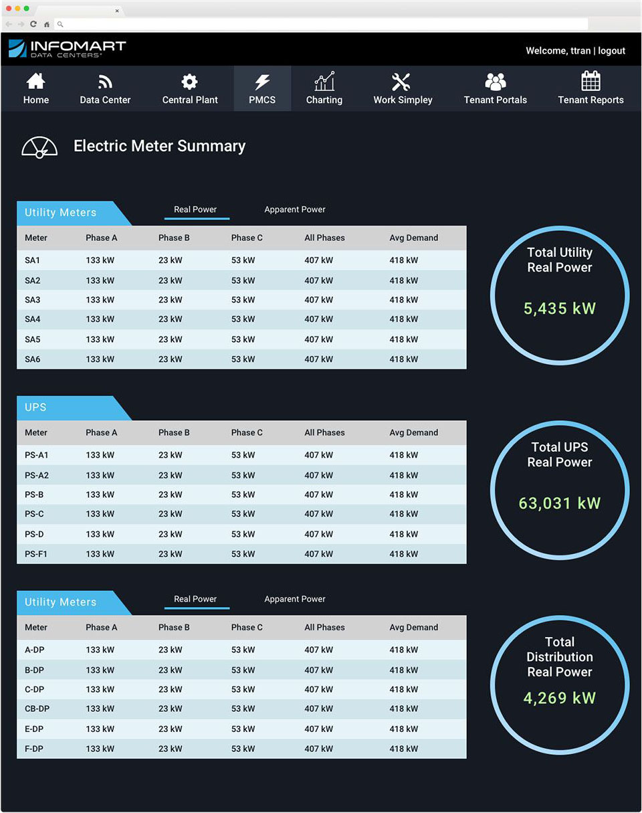
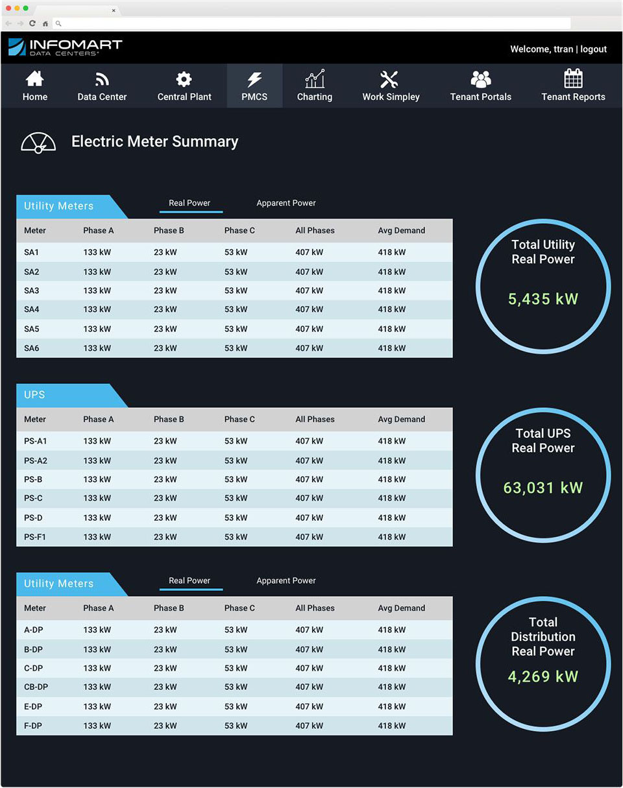

Infomart Energy Dashboard
IoT, Big Data, Analytics, Website, Front-end Development, Visual Design, Branding

While Controlco was in the midst of building out the UI for a few Infomart data centers, we didn't have a feature to show the summary of powers for this particular client. As my first large scale autonomous project at Controlco, I was responsible for creating this part of the product.
The dashboard would be a read-only system where our end users, data center technicians, will not be able to change operational settings.
Users need to be able to see both real power and apparent power, kW and kVA, for every point. However, they also needed to see these values for every phase of a point.
To solve this, I proposed a solution where users can toggle between kW and kVA. I felt it was important to introduce this alternative to our users because by having all these values present, it will be a challenge for them to seek out data.

The data center contains a few power units: power distribution units (PDU), uninterruptible power supplies (UPS), and distribution panels. There are several of each unit, and they also contain phases of electrical power (A,B,C). The users wanted to see a live average as well as a total sum of all units. I met these requirements but also spruced the interface from the previous energy summary pages in the following ways:


 

"How do I help users find data more easily?"
Reviewed past energy dashboards and spoke to data center engineers
Showed wireframe of table concept showing toggle between real and apparent power
Came up with color palette and type
Built directly on DGLux5 platform
Allowed users access and received feedback that overall design made it easier to find numbers
The new summary was tested out by users and data modelers. Users claimed that it was much easier to see certain data, and that the summary dashboard performed better due to hiding half the number of points until needed.
As a designer, it was my job to communicate solutions that will cater to users in the end. In this case, I had enough buy-in to alter the presentation of data. The users had no problem using a toggle to show the units of power separately. Our stakeholders were pleased with how the dashboard turned out and ended up standardizing this summary in the rest of the Infomart data centers.